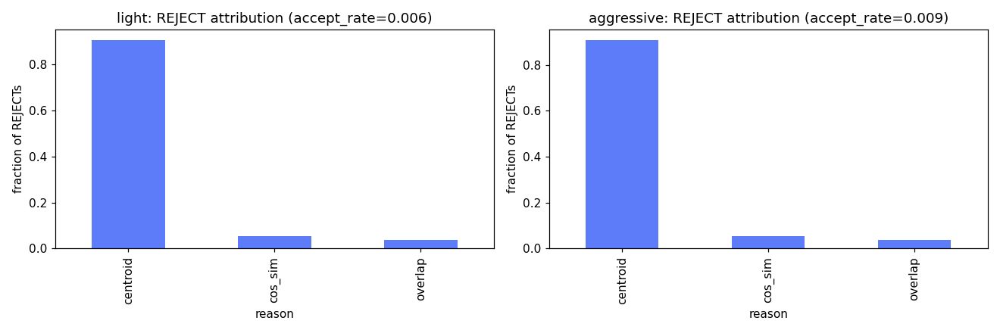
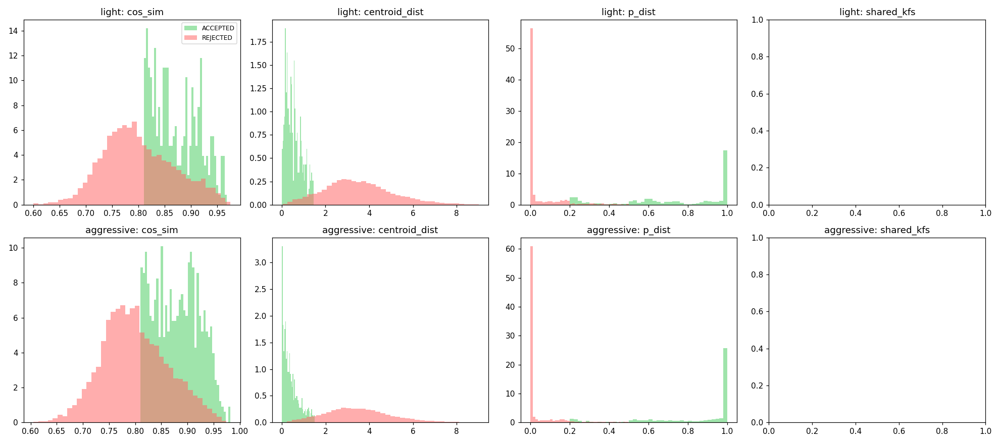

Replica 8 escenas · fusion_method=clip · GTJump determinista · commit 5fb61fe · 2026-06-14
Fases ejecutadas: 0, 1, 2, 3, 4, 6. Omitidas: 5 (Sobol).
Config recomendada: {"fusion_criteria": ["cooccurrence", "aabb", "cos_sim", "overlap"], "cooccurrence_veto_threshold": 3, "th_cossim": 0.580146338133027, "th_points": 0.03821444603587826, "th_overlap_ratio": 0.6844640930984376, "th_overlap_cos": 0.9276162969382312, "th_overlap_ratio_low": 0.1394220566903776}
knee de 'aggressive' generaliza mejor (menor caída relativa al cruzar de condición)
| Condición | mIoU | AP_agn | mAcc | Num_Instances |
|---|---|---|---|---|
| light | 0.2663 | 0.1540 | 0.3997 | 68 |
| aggressive | 0.2280 | 0.0950 | 0.3429 | 83 |
| cadena | mIoU | AP_agn | Num_Inst | ΔmIoU vs base | Wilcoxon p |
|---|---|---|---|---|---|
cooccurrence-aabb-cossim-overlap | 0.2685 | 0.2130 | 74 | -0.0025 | 0.945 |
cooccurrence-centroid-cossim-overlap | 0.2688 | 0.2100 | 75 | -0.0018 | 0.742 |
cooccurrence-centroid-aabb-cossim-overlap | 0.2688 | 0.2100 | 75 | -0.0018 | 0.742 |
cooccurrence-aabb-cossim-overlapold | 0.2665 | 0.1960 | 82 | -0.0068 | 0.312 |
cooccurrence-centroid-cossim-overlapold | 0.2665 | 0.1950 | 83 | -0.0068 | 0.312 |
cooccurrence-centroid-aabb-cossim-overlapold | 0.2665 | 0.1950 | 83 | -0.0068 | 0.312 |
aabb-cossim-overlap | 0.2690 | 0.1600 | 66 | -0.0001 | 0.547 |
centroid-cossim-overlap | 0.2663 | 0.1540 | 68 | — | — |
centroid-aabb-cossim-overlap | 0.2663 | 0.1540 | 68 | +0.0000 | 1.000 |
aabb-cossim-overlapold | 0.2666 | 0.1530 | 77 | -0.0007 | 1.000 |
centroid-cossim-overlapold | 0.2669 | 0.1520 | 78 | -0.0009 | 1.000 |
centroid-aabb-cossim-overlapold | 0.2669 | 0.1520 | 78 | -0.0009 | 1.000 |
| cadena | mIoU | AP_agn | Num_Inst | ΔmIoU vs base | Wilcoxon p |
|---|---|---|---|---|---|
cooccurrence-centroid-cossim-overlapold | 0.2327 | 0.1070 | 106 | +0.0009 | 1.000 |
cooccurrence-centroid-aabb-cossim-overlapold | 0.2327 | 0.1070 | 106 | +0.0009 | 1.000 |
cooccurrence-aabb-cossim-overlapold | 0.2331 | 0.1060 | 104 | +0.0010 | 0.844 |
cooccurrence-aabb-cossim-overlap | 0.2350 | 0.1040 | 90 | +0.0010 | 0.547 |
cooccurrence-centroid-cossim-overlap | 0.2329 | 0.1050 | 93 | +0.0003 | 0.742 |
cooccurrence-centroid-aabb-cossim-overlap | 0.2329 | 0.1050 | 93 | +0.0003 | 0.742 |
aabb-cossim-overlapold | 0.2299 | 0.0990 | 96 | +0.0003 | 0.945 |
centroid-cossim-overlapold | 0.2298 | 0.0980 | 97 | +0.0008 | 0.641 |
centroid-aabb-cossim-overlapold | 0.2298 | 0.0980 | 97 | +0.0008 | 0.641 |
aabb-cossim-overlap | 0.2300 | 0.0950 | 81 | +0.0003 | 0.742 |
centroid-cossim-overlap | 0.2280 | 0.0950 | 83 | — | — |
centroid-aabb-cossim-overlap | 0.2280 | 0.0950 | 83 | +0.0000 | 1.000 |

Δ mIoU de cada cadena vs baseline.
Daño de cooccurrence: {"light": {"mean_delta_mIoU_on_vs_off": 0.0005556477667162015, "mean_delta_AP_agnostic_on_vs_off": 0.04900000000000001, "mean_pct_AP_agnostic_gain": 31.818181818181824, "n_pairs": 6}, "aggressive": {"mean_delta_mIoU_on_vs_off": 0.003968374350438082, "mean_delta_AP_agnostic_on_vs_off": 0.008999999999999994, "mean_pct_AP_agnostic_gain": 9.47368421052631, "n_pairs": 6}}
overlap nuevo vs old: {"light": {"mean_delta_mIoU_new_vs_old": 0.001331935974353271, "mean_delta_AP_agnostic_new_vs_old": 0.009666666666666662, "n_pairs": 6}, "aggressive": {"mean_delta_mIoU_new_vs_old": -0.00018615072753793335, "mean_delta_AP_agnostic_new_vs_old": -0.002666666666666669, "n_pairs": 6}}

Atribución de REJECTs por criterio.

Distribuciones ctx ACCEPT vs REJECT.
Params activos: ['cooccurrence_veto_threshold', 'th_aabb', 'th_cossim', 'th_points', 'th_overlap_ratio', 'th_overlap_cos', 'th_overlap_ratio_low'] → reducidos: ['cooccurrence_veto_threshold', 'th_cossim', 'th_points', 'th_overlap_ratio', 'th_overlap_cos', 'th_overlap_ratio_low']

μ* (importancia) vs σ (interacción) por condición y objetivo.
{"fusion_criteria": ["cooccurrence", "aabb", "cos_sim", "overlap"], "cooccurrence_veto_threshold": 9, "th_cossim": 0.7009442786285183, "th_points": 0.02711735548834665, "th_overlap_ratio": 0.3738508717482608, "th_overlap_cos": 0.927322451389549, "th_overlap_ratio_low": 0.27220801836397585}
Frente de Pareto light (color=Num_Instances).
{"fusion_criteria": ["cooccurrence", "aabb", "cos_sim", "overlap"], "cooccurrence_veto_threshold": 3, "th_cossim": 0.580146338133027, "th_points": 0.03821444603587826, "th_overlap_ratio": 0.6844640930984376, "th_overlap_cos": 0.9276162969382312, "th_overlap_ratio_low": 0.1394220566903776}
Frente de Pareto aggressive (color=Num_Instances).
Consistente entre condiciones: True
Cruce: {"light_knee_on_aggressive": {"mIoU": 0.23114514845288037, "AP_agnostic": 0.125, "Num_Instances": 89.0}, "aggressive_knee_on_light": {"mIoU": 0.27514056497524214, "AP_agnostic": 0.216, "Num_Instances": 78.0}, "light_knee_on_light": {"mIoU": 0.2745189761589006, "AP_agnostic": 0.223, "Num_Instances": 78.0}, "aggressive_knee_on_aggressive": {"mIoU": 0.2352966139660894, "AP_agnostic": 0.112, "Num_Instances": 93.0}, "light_knee_rel_drop_on_aggressive": -0.017643541244530308, "aggressive_knee_rel_drop_on_light": 0.00226428360268166}

Consistencia por escena del θ*.
Sin checkpoints, pipeline completo. ¿Transfiere el hallazgo del estudio (SimulatedSLAM/jump-drift) a SLAM real?
| Config | mIoU | AP_agnostic | Num_Instances |
|---|---|---|---|
| A · baseline [centroid,cos_sim,overlap] | 0.2577 | 0.1860 | 71 |
| B · mecanismo [cooccurrence,aabb,cos_sim,overlap] | 0.2412 | 0.1580 | 76 |
| C · θ* tuneado (sim) | 0.2476 | 0.1620 | 71 |
| D · sin cooccurrence [aabb,cos_sim,overlap] | 0.2586 | 0.1750 | 66 |
orb-B-mechanism_vs_A: ΔAP_agn=-0.0286 (-15.6%) (Wilcoxon p=0.102, n=8); ΔmIoU=-0.0047 (-1.6%)
orb-C-tuned_vs_A: ΔAP_agn=-0.0248 (-13.5%) (Wilcoxon p=0.094, n=8); ΔmIoU=-0.0069 (-2.3%)
orb-D-nocooc_vs_A: ΔAP_agn=-0.0130 (-7.1%) (Wilcoxon p=0.383, n=8); ΔmIoU=+0.0022 (+0.7%)
B_vs_D_cooccurrence_isolation: ΔAP_agn=-0.0156 (-9.2%) (Wilcoxon p=0.078, n=8); ΔmIoU=-0.0069 (-2.3%)
Veredicto: el hallazgo del estudio simulado NO TRANSFIERE a ORB-SLAM real. En ORB-SLAM real, el mecanismo cooccurrence cambia AP_agnostic en -0.0286 (-15.6%, Wilcoxon p=0.102, n=8) y mIoU en -0.0047 (-1.6%). NO transfiere el hallazgo del estudio sim.

Baseline vs mecanismo vs tuneado en ORB-SLAM real.
Memoria machine-readable: study/conclusions.json · tabla maestra: study/runs_master.parquet